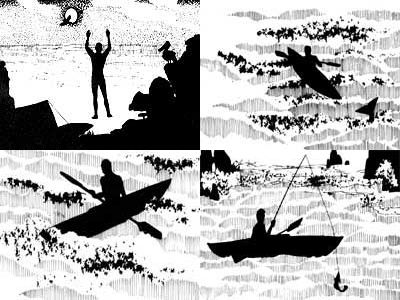

An undefined feeling of incompleteness has-in recent tears-driven many individuals into a plethora of "new" religion and mystical groups. Warrior's Way is a book which explores some of these vague "needs". Its author, Robert S. deRopp, has seen the "consciousness movement" from both sides-as a Ph.D. in biochemistry and as a student of the well-known scien. tistslmystics G. Gurdjieff and P.D. Ouspensky. His experiences have led to some fascinating conclusions . . . and to a philosophy that can help each individual reassume control of his or her life. The volume's final-and most important-chapter follows.
Excerpted from Warrior's Way by Robert S. de Ropp (copyright © 1979) with permission from Delacorte Press/Saymour Lawrence. Available in hard cover for $10.00 or in paperback for $4.95 from any good bookstore or from Delacorte Press, 1 Dag Hammarskjold Plaza, New York, N.Y. 10017.
They followed each other endlessly, swelled, broke, swept up the beach, vanished. I sat with my back against the rock wall, looking out to sea. The rock was a conglomerate. It told me its history. It had once been part of a beach, had then sunk deep into the earth, where the pebbles had been fused by heat and pressure. Then it was heaved aloft by enormous pressures and towered above me as a cliff. Now the ocean nibbled away at it, and it became a beach again.
Rocks, ocean, sky. The endless cycles. The sky was perfectly cloudless and the sea was calm. I would spend the night In my tent by the beach and go out in my kayak in the dawn light. Meanwhile, the planet rolled and the evening sun was swallowed by the sea. A flush of crimson filled the sky. A line of brown pelicans made their way to the rock on which they roosted. Above the place where the sun had vanished . . . the planet Venus emerged.
Waves, waves. As the darkness came there was only the voice of the sea, and a whispering wind from inland as air drained from the slopes and flowed gently along the canyon. It was a very warm wind. I could hardly believe that this was December. Not even a drop of rain had fallen all month. The creeks that should have been flowing were all dry. Another dry winter. Some new weather cycle was starting. A thought crossed my mind. If the climate really went bad on us, it could shake us out of the country like fleas out of a blanket. We might have to flee as the Okies fled from the dust bowl. The Okies fled to California. But where could the Californians go?
Perhaps, like lemmings, they would migrate in swarms to the coast and plunge into the sea. I could imagine the land breathing a sigh of relief.
All around me monstrous movements were taking place. The very land beneath my body was shifting. The continents drifted like barges on the plastic mantle: carried by enormous plates that plunged above or beneath each other. There, in the direction of the sunset, under that calm ocean, the Pacific plate plunged under the North American plate . . . heaving up the coastal ranges in the process. Horrendous stresses were generated, stresses that must be released in the form of earthquakes. We lived on top of a system of coiled springs. They could go off at any time, shaking cities to pieces. This grinding, crushing motion of plate against plate would tear off Baja California along with the city of Los Angeles and transport it northward until the site of L.A. would be level with that of San Francisco and located on an island in the Pacific.
In about ten million years.
In ten million years what will be left of Los Angeles? Or of San Francisco? Or of Homo sapiens?
Could a species so volatile, disharmonious, and paranoid possibly endure for ten million years? Or one million? Or ten thousand? Or one thousand?
Alone on the beach at night I find a new time scale. My little life becomes as brief as the flash of a meteor across the sky. And yet, if I like to think so, this scene is all for me. Only I-with my human-brain-can take in its significance, can realize that the planet Venus hanging above the ocean is a world as big as the earth . . . is shrouded in carbon dioxide . . . and has a surface as hot as molten lead. Only I can know, as the big moon rises, that not so long ago men stood on its surface and left footprints in its dust. Only I can tell that this massive continent was once part of Pangea, the supercontinent that broke up 200 million years ago. All this I know because I am part of a superbrain, the collective brain of humanity. No other creature has such a collective brain. The birds roosting on the rocks, the fish in the ocean, the plants and insects, the sheep on the hills: They do not even know their own histories, let alone the history of the planet.
The moon, low in the sky, appeared to be enormous. It illuminated the beach, the sparse willows along the creek, the lapping waves, the huge expanse of ocean. A night bird called. Some bleating sounds came from the sheep in the hills. From the direction of Route 1 came the sound of a logging truck changing gear.
I walked back from the beach to my tent and crawled inside. From there I could go where I wished, leaving my body, traveling in spirit. My teacher in the spirit realm was called Fong. He was a Taoist hermit, or had been when alive. Fong had told me the secret of Tao, of balancing the yin and the yang. That was the essence of the balanced way, which avoided extremes. Too much yin and one became slothful and self-indulgent. Too much yang and one became tense and ambitious. A Taoist hermit goes with the flow. He Is like the fog that rolls in from the ocean. The fog enshrouds and envelops the redwood trees, but it does not distort them. It touches everything, but leaves everything unchanged.
Ah, yes. Before I contacted Fong, I was prone to think in terms of super effort. Now I go with the flow. It was possible-if one was quiet enough and relaxed enough-to project one's awareness clear out of the body. It was said of the Taoist hermits that they could fly like dragons. Fong, who really existed (he was described by Rowena Farre in The Beckoning Land), was a master of flying. One flew in the subtle body by perfectly balancing on the back of the bird of time. The bird of time has two wings called past and future. But between the two wings is a spot on which the sage can balance. He flies in the subtle body on the back of the bird of time.
Balance, balance. Ascending out of the body I rose on the bird of time above the Californian shore. Reflected light, bouncing off the moon, illuminated the earth. On such trips I became aware of my body lying there by the beach, a speck no bigger than a grain of sand. Sometimes the bird of time journeyed so far that I wondered if I would be able to return. What would happen to my speck of a body without the "I am"? But there was a thread like the string of a kite between me and the body, and always it wound me back. My body slept. The planet rolled. In the east the sky began to lighten.
I ate breakfast in a blend of dawn and moonlight, dismantled my tent, and took it back to the car. Lifting my kayak over my shoulder, I carried it to the ocean. It was a new kayak, shorter and lighter than my old one, quite a different design . . . more like a decked canoe. It had a watertight compartment for my gear and a keel to help it track. The old kayak was flat-bottomed as a scow and waddled like a duck. I had made the new kayak myself and named it Small Porgy.
I arranged my gear in the forward compartment and bolted the bulkhead in place. Dragging Small Porgy down the beach, I lined it up to face the surf. The surf was always high at Russian Gulch. It was a lot easier to go out from Fort Ross . . . but a new breed of bureaucrats had taken charge of the park and made it practically impossible for a fisherman to get down to the beach. I had grown tired of pleading and arguing with them. Better face the surf than the bureaucrats.
So. One lined up one's boat and waited for the right moment. A tricky business. The moment of truth. Experience had taught me one thing. Once you launched you had to go on. No hesitating, no turning back. That was disastrous. You would be rolled by the breakers and lose equipment.
So I launched, plunged on, and was hit by a breaker. Poor timing. Small Porgy took on gallons of water. But my new design allowed for that: Fore and aft Small Porgy was filled with urethane foam. A floating souffle. She stayed afloat even when full of water.
Now she was half full. I paddled clear of the breakers and bailed out the water. I was wet, but the sun was rising. It would be a beautiful day, clear sky, calm sea. I would dry out.
A sudden blast behind me and a small cloud of vapor caused me to look back. It was Little Orphan Alfie (or was it Annie?), the lonely gray whale. It had been in the cove all summer, left behind in the great migration. A student of whales informed me that Alfie (or Annie) would starve. There was not enough food in that cove to keep it alive. It had lost touch with the great cycle that governed whale behavior. Too bad. Alfie was friendly. He seemed to enjoy coming up close to the kayak and giving me a start.
"Now, Alfie, I love whales in general and you in particular, but don't you think you could play just a wee bit farther off?" After all, the beast was at least 15 feet long and encrusted with barnacles. Suppose it took it into its head to scratch its back on Small Porgy's keel?
Fortunately, Alfie had other things in mind and rolled off, blowing at regular intervals. I let down my jig and started fishing. On the floor of the ocean were hordes of white sea anemones. I could feel their tentacles grabbing at the bait.
I could tell by the feel of the line that I was held by a sea anemone. There is a rubbery feel about sea anemones. I jiggled the line. The sea anemone failed to release the hook. I pulled more forcibly. Extraordinary that those rubbery creatures could hold on so strongly that the 50-pound test line would break before they would loosen their hold on the rock! But this time the line was stronger than the anemone. I hauled it up, cautiously cut the creature loose, and dropped it back in the water. It would settle back on the rock.
A soft machine capable of repairing itself.
Those soft machines! Once again I marveled at the inventive power of the Old One. To create that enormous variety of soft machines out of carbon compounds and a few mineral salts . . . to make them self-repairing, self-reproducing, and even, in the case of man, self-aware . . . what a feat that was! All the basic mechanisms had been invented quite early-at the time when the ancestors of my sea anemone appeared on the scene-some time in the Cambrian . . . five to six hundred million years ago. Already the Old One had dreamed up muscular contraction, nervous conduction, sexual reproduction, and stinging cells that would paralyze the prey. What a device! The nerve fibers of the sea anemone were not very different from my own: extremely thin tubes filled with a dilute solution of sodium and potassium salts. Imagine trying to build a complex computer with only thin tubes of salt solution to transmit the signals! Out of this early device developed the human brain, which could generate the theory of relativity . . . write the sonnets of Shakespeare and the symphonies of Beethoven . . . design the Gothic cathedrals . . . originate the Gospels, the Sutras, the Upanishads. Not to mention invent and explode an atomic bomb.
All done with minute tubes filled with dilute salt solutions!
The ingenuity of the Old One is truly unbelievable. I had long ago given up trying to explain the mechanisms of evolution. The old neo-Darwinian cliches about natural selection acting on random mutations were so puerile that I could not take them seriously. I was satisfied to be aware that the Old One existed, that it could not be represented in any way, that it was forever beyond my power to understand. One could call it the soul or mind of the biosphere . . . but this explained nothing.
My kayak rocked and rolled on the Pacific swells. In some deeper level of my mind, vaguely erotic images followed one another, like a flock of nymphs chased by satyrs.
Had I the wealth and resources of the Gupta kings, I would build on one of those smooth slopes by the Pacific a temple dedicated to the Old One. It would be even more complex than the great temples at Khajuraho and even richer in ornaments. The temple would celebrate the entire dream of the Old One, three billion years of organic evolution. All forms of life would there be represented. Fungi would sprout from the cornices, fantastic orchids from the eaves. There would be beetles and butterflies. There would be trilobites, graptolites, coelacanths, and crocodiles. In forests of cycads and tree ferns would be brontosaurs, allosaurs, tyrannosaurs, and mesosaurs. Pterodactyls would grimace like gargoyles. Sea anemones would link arms with giant squids. Snakes, worms, crinoids, starfish, eels would coil and writhe in undulating heaps. There would be carnivores and herbivores, the hunters and the hunted, horses, mammoths, antelopes, giraffes, anteaters. In the midst of all this teeming life a few naked apes at various stages of evolution would scuttle around... not the lords of creation at all, but simply one more product of the Old One's dream.
Ah, yes, that would be quite a temple, the whole squirming mass held together by endless strands of DNA, the code of life. And to that temple I would invite the young, fresh folk-she and she-to celebrate their nuptials . . . using the energies liberated during sexual union to enhance their awareness of the force that gave them life. Indeed it is true that through sexual union one can come to awareness of the Old One. This was well-known in ancient India . . . where the devadasi-temple girls trained in the arts of love-helped the worshiper attain the proper state through the practice of the sacred maithuna. This greatly shocked the proper British . . . who imagined that God was as uptight about sex as they were.
Once again I was hung up. This time the sea anemone got the better of the struggle. Another jig lost on the bottom. I paddled south to Pinnacle Rock. There were some big fish in its vicinity and fewer sea anemones. On every ridge of the rock stood brown pelicans, prehistoric in appearance, like pterodactyls or gargoyles. They took off awkwardly as my kayak approached. A large fish grabbed the jig, bending my rod, making me suddenly alert. It was an orange rockfish. I could tell that even before I reeled it in. They never put up a fight but came in passive as lumps of lead. Lingcod, on the other hand, fought like tigers. In a kayak one had to land them in one's lap. A large, struggling lingcod heavily armed with dorsal spines could be quite a lapful. But I caught no lingcod, only blue, orange, black, and vermilion rockfish ,. . . and a nice-looking flounder. What was a flounder doing on a rocky reef? One normally catches them on a sandy bottom.
A hang-up again. My mind had been wandering. Philosophical speculations. I swore and jerked the line. It came up with a starfish attached. i removed the starfish, put on fresh bait, gave my full attention to fishing. Alone on the ocean in a small kayak, one indulged in daydreams at one's peril.
Stop thinking, commenting, interpreting, asking questions.
But the chatter of my accursed talk machine continued to interfere with my simple awareness. The idiot wanted to know the meaning of things.
What is the sense and significance of life on the earth in general and of human life in particular?
Gurdjieff's great question.
A calypso from the Books of Bokonon drifted through my head.
Tiger got to hunt
Bird got to fly
Man got to sit and wonder,
..."Why, why, why?'
Tiger got to sleep
Bird got to land
Man got to tell himself he understand.
The itch to interpret. The mania for meaning. They concealed the real world as clothes conceal the body of a woman. If you're a lover you want the woman, not the clothes. You want her warm, naked, as she really is.
Sense and significance?
What is the sense and significance of these white sea anemones who steal my rigs? What is the sense of these pelicans that look like pterodactyls, of Little Orphan Alfie the lost gray whale, of the rocks, of the ocean, of the earth, of the galaxy, of this elderly hominid paddling around in a kayak of fiberglass and resin trying to catch himself a few fish dinners?
They have no sense. They have no significance. They simply are. The itch to interpret is a sickness of the mind. It merely obscures the here and now with a fog of speculation.
Energy, matter, life, mind. The pyramid of Being. At the level of mind the cosmic process becomes conscious of itself. It becomes a witness. I am a witness, here on this ocean. I can see some way into the past, a little into the future. I can see a great deal of the present if I don't ask questions about sense and significance.
Those who insist on asking such questions must invent their own answers. They can believe anything they wish to believe.
Another Bokonon calypso trickled through my head:
I wanted all things
To seem to make some sense,
So we could all be happy, yes,
Instead of tense.
And I made up lies
So that they all fit nice,
And I mode this sad world
A par-a-dise.
Kurt Vonnegut-who had Invented both Bokonon and Bokononism-should really have taken the religion seriously. He could have come to California, where the appetite for new religions is insatiable, and founded the First Bokononist Church. Bokononism made far more sense than a lot of the far out religions that bloomed under the California sun.
Really, you can believe whatever you like. Whatever answer you, give to questions about the sense and significance of life will be guesses. You can never prove, anything. So why bother to guess?
I was ready to go in. My legs were stiff. The fish had stopped biting. From the look of the beach, the surf was rising. It was best to go in at slack tide . . . but I had forgotten to check the tide tables. I packed away my sack of fish, my tackle box, bang stick, gaff, and the lower part of my fishing pole, closed the door of my watertight bulkhead, and started for the beach.
When coming In, always be ready for a wipeout. Have no loose gear in the boat. Put your watch in a waterproof pocket, take off your sunglasses, and pick up the rhythm of the waves. I shifted into a kneeling position and waited just behind the surf line. It was important to keep one's cool . . . and to time things properly. There were two schools of thought about landing a boat through surf. One, the heroic school, said pick the biggest wave and ride it all the way up the beach. This was fine If you balanced just behind the crest of the wave, but if you got too far ahead you'd get pitchpoled, and if you were too far behind you would be swept back by the undertow and the next wave would roll you. I preferred the cautious school . . . which said wait out the big ones and come in during a quiet spell.
I waited. A series of big ones lifted me high in the air and crashed on the beach in a welter of creamy foam. The quiet spell was a long time coming. The surf had' really risen since the early morning. Some far-off storm, presumably. One had to be patient. Wait.
Finally things calmed down a bit and I glanced over my shoulder. Never start in without checking what's coming up behind you. No big ones in sight. I picked up the crest of the next wave and swooshed toward the beach. A little too far forward . . . but the keel did its work and the boat was not sideswiped. I jumped out fast. Small Porgy was swept back by the undertow and took a breaker over the stern. but I had her safely by the bowline attached to my paddle, hauled her up the beach, bailed out the water.
I carried my gear up the beach, placed Small Porgy well out of reach of the ocean, sat down, and ate my lunch. The ocean was beautiful-a dreamy blue-but the surf was heavy and becoming heavier. I had come in not a moment too soon.
I gazed gratefully at the ocean. It was so enormous and my boat was so very small. It could crush me as easily as I could swat a fly. But it hadn't. It had let me sneak out, get my fish, and return with nothing worse than a wetting. What a teacher it was! How much better than the human teachers with their endless talk about higher consciousness and the sense and significance of life and of man. The ocean did not talk of higher consciousness. But woe betide those who did not watch what they were doing, who came to or went out carelessly through the surf, who failed to watch out for the rising of the wind.
I looked at Pinnacle Rock. The rising surf smashed against it, smothering it in spray. Pinnacle Rock had a strange quality. In its shadow I felt aware of the presence of death, as if death were perched among the sea gulls and pelicans, watching me. Don Juan informs us that a Warrior dances before his death, that that dance is performed in a special place of power. Death must watch the Warrior's last dance, in which he recounts all the battles he has won and lost.
One needs a myth for living and a myth for dying. This myth of the Warrior's last dance pleases me. My spirit will dance there in the shadow of that rock, among sea gulls and pelicans, sea lions and starfish. I would like to give my flesh back to the ocean to feed the fish, whose bodies have so often fed me.
I know that death will scatter all the elements of my personal self, as a necklace of beads is scattered when the string breaks. But I know that the archetypes recur again and again, endlessly playing their roles in the cosmic drama, each with its own memory deeply rooted in the collective unconscious. It is this, the memory of the archetypes, that gives us the sensation that we have been here before. The personal ego perishes at death. But the archetypes are longlived, because they are projections of the mind of the Old One. So-though my personal ego perishes-my archetypes will appear again and again and dance together on the stage of life.
The show must go on. It must go on forever, eternally recurring. My spirit, in its dance of death, will turn and whirl like the Mevlevi dervishes. What is the theme underlying this sacred dance? The turning, whirling bodies symbolize change . . . death and rebirth . . . the days and nights of the cosmos. The outstretched arms-one hand facing up, the other down-symbolize the great cosmic interchange: "One hand gives, the other takes." But the spirit of the dancers is beyond being and nonbeing, focused on the One.
No God but God.
The whirling of the dervishes, the endless rolling of the wheel of rebirth proclaim -the message of Zarathustra's animals: the eagle, knower of the heavens . . . the serpent, knower of the earth.
"O Zarathustra," said his animals, "to those who think like us, all things dance: They come and hold out the hand and laugh and flee ... and return.
Everything goes, everything returns . . . eternally rolls the wheel of being.
Everything dies, everything blooms again ... eternally runs the year of being.
Everything breaks, every-thing is united anew . . . eternally builds itself the house of being.
Everything parts, everything meets again . . . the ring of beng remains eternally true to itself.
Being begins to every 'Now' . . . around every `Here' rolls the sphere of 'There'.
The middle is everywhere.
(Thus Spake Zarathustra)
|
 |
|
|